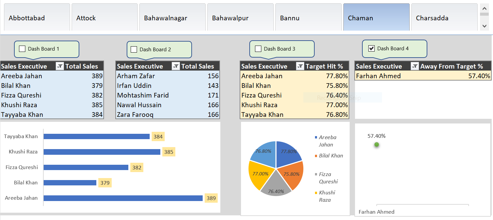

This report provides a comprehensive analysis of sales performance across different regions and sales executives. It enables business leaders to monitor key metrics such as total sales, sales targets, and performance gaps to make data-driven decisions.
These steps ensure accurate data analysis, streamlined reporting, and actionable insights for sales optimization. 🚀📊

What It Shows:
✔ Sales performance of each executive.
✔ Identifies top-performing individuals.
Visuals Used:
✔ Table listing sales executives with total sales.
✔ Bar chart for quick comparison.
💡 Key Insights:
✔ Identifies top and bottom performers.
✔ Helps in performance-based incentives and training needs.
What It Shows:
✔ Sales figures across different regions.
✔ Regional distribution of performance.
Visuals Used:
✔ Table listing sales per region.
✔ Bar chart for regional comparison.
💡 Key Insights:
✔ Helps allocate resources and marketing efforts effectively.
✔ Highlights high-potential regions for expansion.
What It Shows:
✔ Sales executives' progress towards their targets.
Visuals Used:
✔ Table with Target Hit % per executive.
✔ Pie chart for proportion of target achieved.
💡 Key Insights:
✔ Identifies executives who need support to meet targets.
✔ Helps set realistic sales goals.
What It Shows:
✔ Sales executives who are far from meeting their targets.
Visuals Used:
✔ Table with Away From Target %.
✔ Scatter plot highlighting executives needing attention.
💡 Key Insights:
✔ Helps managers intervene before targets are missed.
✔ Aids in performance reviews and corrective actions.
These dashboards help businesses track performance, optimize strategies, and boost sales effectively!
Total Sales = SUM(Sales[Sales Amount])
Summarizes total revenue per sales executive.
Target Hit % = DIVIDE([Total Sales], [Sales Target], 0) * 100
Calculates the percentage of the sales target achieved.
Away From Target % = 100 - [Target Hit %]
Determines how much an executive is missing their target by.
These formulas provide actionable insights into sales performance and target achievement!
By leveraging these insights, businesses can optimize sales efforts, improve executive performance, and drive revenue growth.